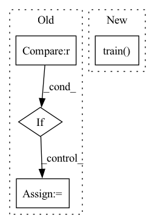

Pattern ID :6370
Before Change
self.AUG.series_augment = cr.apply_cr_aug
elif self.AUG.ada_aug_type == "diffaug":
self.AUG.series_augment = diffaug.apply_diffaug
elif self.AUG.ada_aug_type in ["simclr_basic", "simclr_hq", "simclr_hq_cutout", "byol"] :
self.AUG.series_augment = simclr_aug.SimclrAugment(aug_type=self.AUG.ada_aug_type)
elif self.AUG.ada_aug_type in ["blit", "geom", "color", "filter", "noise", "cutout", "bg", "bgc", "bgcf", "bgcfn", "bgcfnc"]:
self.AUG.series_augment = ada_aug.AdaAugment(**ada_augpipe[self.AUG.ada_aug_type])
else:After Change
elif self.AUG.cr_aug_type in ["simclr_basic", "simclr_hq", "simclr_hq_cutout", "byol"]:
self.AUG.parallel_augment = simclr_aug.SimclrAugment(aug_type=self.AUG.diffaug).train().to(device)
elif self.AUG.cr_aug_type in ["blit", "geom", "color", "filter", "noise", "cutout", "bg", "bgc", "bgcf", "bgcfn", "bgcfnc"]:
self.AUG.parallel_augment = ada_aug.AdaAugment(**ada_augpipe[self.AUG.cr_aug_type]).train() .to(device)
else:
raise NotImplementedError
In pattern: SUPERPATTERN
Frequency: 4
Non-data size: 4
Instances Fragment ID: 22211856
Project Name: postech-cvlab/pytorch-studiogan
Commit Name: 8ca218606f1796f48b734942ce21d931a54cc3d1
Time: 2021-10-05
Author: joonghyuk4727@gmail.com
File Name: src/config.py
M Class Name: Configurations
N Class Name: Configurations
M Method Name: define_augments(3)
N Method Name: define_augments(1)
M Parent Class: object
N Parent Class: object
M File Name: src/config.py
N File Name: src/config.py
M Start Line: 481
M End Line: 544
N Start Line: 481
N End Line: 548
Before Change
// discriminator_params.append(param)
// param_groups = {"amortization": amortization_params, "hyperlatent_likelihood": hyperlatent_likelihood_params}
if model.use_discriminator is True :
// param_groups["discriminator"] = discriminator_params
discriminator_parameters = model.Discriminator.parameters()
disc_opt = torch.optim.Adam(discriminator_parameters, lr=args.learning_rate)
optimizers["disc"] = disc_opt
After Change
if epoch > 0:
ckpt_path = helpers.save_model(model, optimizers, mean_epoch_loss, epoch, device, args=args, logger=logger)
model.train()
for idx, data in enumerate(tqdm(train_loader, desc="Train"), 0):
data = data.to(device, dtype=torch.float) Fragment ID: 22211843
Project Name: justin-tan/high-fidelity-generative-compression
Commit Name: fd4c480af88db03d7c14e91a4addb0260ec84af5
Time: 2020-08-11
Author: justan@student.unimelb.edu.au
File Name: train.py
M Class Name: AnonimousClass
N Class Name: AnonimousClass
M Method Name: train(9)
N Method Name: train(8)
M Parent Class:
N Parent Class:
M File Name: train.py
N File Name: train.py
M Start Line: 100
M End Line: 133
N Start Line: 90
N End Line: 109
Before Change
)]
// if evaluation episodes are set, perform additional evaluation by policy rollout
if cfg.algorithm.n_eval_episodes > 0 :
eval_env = self.create_distributed_eval_env(self.env_factory, self.eval_concurrency,
logging_prefix="eval-rollout")
evaluators += [RolloutEvaluator(eval_env, n_episodes=cfg.algorithm.n_eval_episodes, model_selection=None)]
trainer.train(
n_epochs=cfg.algorithm.n_epochs,After Change
at the end of each epoch, which are run automatically). If set to None, evaluations will run on epoch end only.
self._trainer.train(
n_epochs=self._cfg.algorithm.n_epochs if n_epochs is None else n_epochs,
eval_every_k_iterations=(
self._cfg.algorithm.eval_every_k_iterations
if eval_every_k_iterations is None else eval_every_k_iterations
),
evaluator=MultiEvaluator(self.evaluators) if evaluator is None else evaluator
)
@staticmethod
def _split_dataset(dataset: Dataset, validation_percentage: float) -> Tuple[Subset, Subset]:
Fragment ID: 22211850
Project Name: enlite-ai/maze
Commit Name: 61924b58c1b1f65ca39cfeb3d9325948cdc64664
Time: 2021-05-06
Author: office@enlite.ai
File Name: maze/train/trainers/imitation/bc_runners.py
M Class Name: BCRunner
N Class Name: BCRunner
M Method Name: run(4)
N Method Name: run(2)
M Parent Class: TrainingRunner
N Parent Class: TrainingRunner
M File Name: maze/train/trainers/imitation/bc_runners.py
N File Name: maze/train/trainers/imitation/bc_runners.py
M Start Line: 44
M End Line: 92
N Start Line: 102
N End Line: 123
Before Change
train_labs = torch.tensor(train_data["labels"]).cuda()
train_ids = torch.tensor(train_data["uid"]).cuda()
if args["embed_size"] == 768 :
model = RobertaModel.from_pretrained("roberta-base").cuda()
else:
model = RobertaModel.from_pretrained("roberta-large").cuda()
classifier = FeedForward(args["embed_size"],int(args["embed_size"]/2),args["nooflabels"]).cuda()
After Change
for ep in range(args["epochs"]):
epoch_loss=0
start = time.time()
model.train()
// Iterate over batches
for batch_ndx,(enc, mask, seg, gold,ids) in enumerate(tqdm(loader)):
batch_loss = 0
optimizer.zero_grad() Fragment ID: 22211839
Project Name: utahnlp/infotabs-code
Commit Name: 27cf8e2d7a767e0c5ee1a285797dd8d68090d707
Time: 2021-11-22
Author: maitrey@redfish.cs.utah.edu
File Name: scripts/roberta/classifier.py
M Class Name: AnonimousClass
N Class Name: AnonimousClass
M Method Name: train(1)
N Method Name: train(1)
M Parent Class:
N Parent Class:
M File Name: scripts/roberta/classifier.py
N File Name: scripts/roberta/classifier.py
M Start Line: 83
M End Line: 164
N Start Line: 112
N End Line: 193